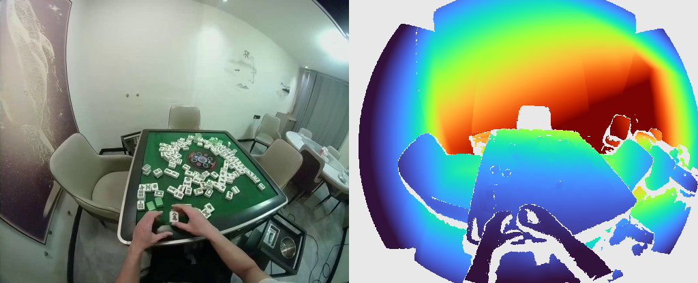
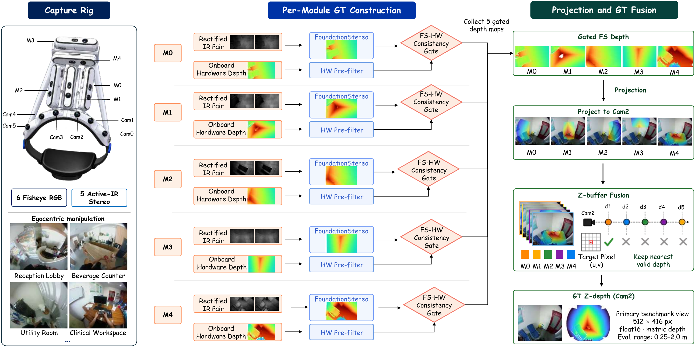
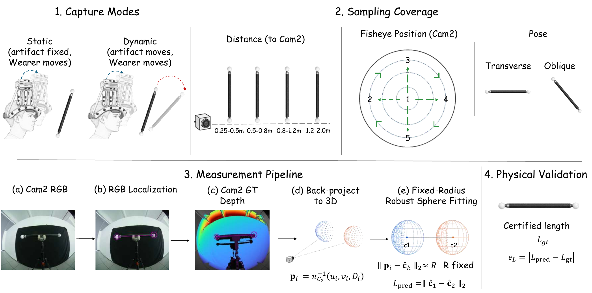
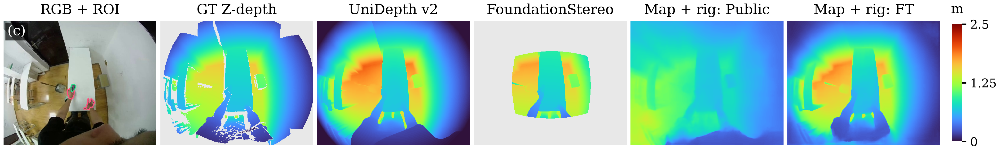

EgoDepth-Bench Benchmarking Metric Depth for Egocentric Manipulation
The benchmark
During manipulation, the hands, the object and the camera can all move at once. EgoDepth-Bench pairs six synchronized fisheye views with metric depth on the grid of one reference camera. Monocular, stereo and multi-view methods can be compared on the same interaction.
- Timestamps
- 941,233
- Physical sites
- 37
- Recordings
- 1,155
- Recorded time
- 8.72 h
Interactive sequences
Seven six-second clips from six training sites. Drag the divider to reveal depth as the hands move, or pause and step through individual frames.
Camera 2 · Native fisheye
Mahjong tiles

Scenes
7 clipsCamera 2 RGB and reference depth · Full 512 × 416 frame · 30 Hz. Colors show optical-axis distance, saturated outside 0.25–2 m. Gray marks pixels without reference depth.
Paper Fig. 1 · Six synchronized views at 2.0 s in the mahjong clip


Capture and reference depth
Six RGB cameras and five active-infrared stereo modules share a 30 Hz trigger. Five participants wore the rig during everyday tasks. The split holds out entire sites, with 24 for training, five for validation and eight for testing.


Checking metric scale
The rig measures a ball-bar with a certified sphere spacing of 499.9903 mm. Across 1,220 accepted measurements, the absolute spacing error is
- Median
- 1.27 mm
- 95th percentile
- 6.66 mm


Qualitative comparisons
Compare the same held-out interaction across four predictions and the reference depth. Follow the contours around the hand and object. Gray denotes invalid depth.
Open the complete paper figure



Quantitative results
Evaluation covers 6,574 timestamps at eight held-out sites, weighted equally. Depth error is measured where a method predicts within the 0.25–2 m reference domain. Coverage is the fraction of that domain predicted.
Accuracy and coverage
FoundationStereo · public checkpoint · two views
- Full-image AbsRel ↓
- 0.068
- Reference coverage
- 35.4%
Adapting MapAnything
Full-image AbsRel ↓ · six views and rig poses · 100% coverage for all three conditions
Public-checkpoint benchmark
The table groups 18 public models by input and scale convention. Hand and object results use 291 and 257 reference-supported annotated frames, respectively.
Scroll horizontally on narrow screens to see all metrics.
| Method | Views | Main test set · full image | Hands · annotated subset | Objects · annotated subset | |||||
|---|---|---|---|---|---|---|---|---|---|
| AbsRel ↓ | MAEZ ↓cm | δ1 ↑ | Coverage ↑% | MAEZ ↓cm | Coverage ↑% | MAEZ ↓cm | Coverage ↑% | ||
| Metric monocular: camera 2; model-supported calibration; no alignment | |||||||||
| UniDepth v2 | 1 | 0.201 | 15.44 | 0.706 | 100.0 | 15.05 | 100.0 | 11.52 | 100.0 |
| Depth Pro | 1 | 2.152 | 149.66 | 0.019 | 100.0 | 78.01 | 100.0 | 90.91 | 100.0 |
| Metric3D v2 | 1 | 0.452 | 37.37 | 0.296 | 100.0 | 17.95 | 100.0 | 20.66 | 100.0 |
| DA3 Metric-Large | 1 | 0.458 | 31.61 | 0.414 | 100.0 | 10.72 | 100.0 | 12.19 | 100.0 |
| ZoeDepth | 1 | 2.457 | 159.24 | 0.006 | 100.0 | 115.11 | 100.0 | 116.82 | 100.0 |
| UniK3D | 1 | 0.392 | 30.63 | 0.387 | 100.0 | 33.77 | 100.0 | 31.33 | 100.0 |
| DAC | 1 | 0.411 | 38.91 | 0.246 | 96.7 | 9.92 | 99.3 | 17.74 | 99.9 |
| UniDAC | 1 | 0.242 | 20.30 | 0.519 | 99.2 | 16.88 | 100.0 | 14.04 | 100.0 |
| Calibrated RGB stereo: cameras 2–3; rectified overlap; no alignment | |||||||||
| FoundationStereo | 2 | 0.068 | 7.35 | 0.951 | 35.4 | 2.15 | 72.8 | 2.52 | 81.0 |
| GeoStereo | 2 | 0.078 | 8.24 | 0.954 | 35.4 | 2.28 | 72.8 | 2.75 | 81.0 |
| Metric reconstruction from RGB: no supplied rig poses; no alignment | |||||||||
| MASt3R | 2 | 1.499 | 93.22 | 0.074 | 100.0 | 70.06 | 100.0 | 66.06 | 100.0 |
| CUT3R | 6 | 1.100 | 64.58 | 0.184 | 100.0 | 64.17 | 100.0 | 62.93 | 100.0 |
| Metric multi-view with calibration: synchronized RGB and per-camera rays; no alignment | |||||||||
| MapAnything | 6 | 3.168 | 200.76 | 0.031 | 100.0 | 198.23 | 100.0 | 179.28 | 100.0 |
| MapAnything + rig | 6 | 0.708 | 49.07 | 0.204 | 100.0 | 36.51 | 100.0 | 33.81 | 100.0 |
| Oracle-aligned multi-view: synchronized RGB; scale-only alignment | |||||||||
| VGGT | 6 | 0.428 | 30.59 | 0.365 | 100.0 | 21.90 | 100.0 | 16.83 | 100.0 |
| VGGT-Ω | 6 | 0.284 | 19.60 | 0.553 | 100.0 | 10.43 | 100.0 | 12.66 | 100.0 |
| Oracle-aligned monocular: camera 2; representation-specific alignment | |||||||||
| Depth Anything v2 | 1 | 0.247 | 20.55 | 0.533 | 100.0 | 6.57 | 100.0 | 11.51 | 100.0 |
| Marigold | 1 | 0.275 | 19.01 | 0.569 | 100.0 | 13.44 | 100.0 | 12.51 | 100.0 |
| MoGe | 1 | 0.323 | 21.13 | 0.497 | 100.0 | 14.13 | 100.0 | 12.77 | 100.0 |
Metric definitions and experimental conditions
Read error with coverage. AbsRel, MAEZ, and δ1 are computed on the intersection of valid reference and prediction support. Coverage is the predicted fraction of the valid reference domain in 0.25–2.0 m. δ1 uses the 1.25 threshold. Pixels pool within sites, then sites receive equal weight. Coverage is rounded as in the paper.
Input conventions. Monocular models receive camera 2; stereo receives cameras 2/3 rectified to an 800 × 640, 90° horizontal field of view. Six-view methods receive synchronized cameras. MapAnything uses its Apache checkpoint and per-camera calibrated rays; “+ rig” also supplies metric camera-to-rig poses. The two MapAnything rows are conditions of the same model, not two independent models.
Metric and oracle groups are different settings. Metric outputs are not aligned. Oracle alignment uses target-frame ground truth: a positive least-squares Z scale for VGGT, VGGT-Ω, and MoGe; affine inverse depth for Depth Anything v2; and affine Z for Marigold. A single full-target fit is reused for all regions. These oracle scores do not establish metric scale recovery.
Adaptation with matched inputs
Public, Scale-only, and Fine-tuned MapAnything share Apache initialization, six RGB views, calibrated rays, and metric rig poses. Test sites are held out from fine-tuning.
Scroll horizontally on narrow screens to compare all three conditions.
| Evaluation | Public | Scale-only | Fine-tuned |
|---|---|---|---|
| Full image | |||
| AbsRel ↓ | 0.708 | 0.601 | 0.091 |
| MAEZ (cm) ↓ | 49.07 | 43.05 | 7.03 |
| Coverage (%) ↑ | 100.0 | 100.0 | 100.0 |
| Annotated subset | |||
| Hand MAEZ (cm) ↓ | 36.51 | 30.55 | 3.82 |
| Object MAEZ (cm) ↓ | 33.81 | 29.05 | 5.21 |
| Object A5cm (%) ↑ | 11.91 | 12.02 | 59.96 |
| Object coverage (%) ↑ | 100.0 | 100.0 | 100.0 |
| Active-object A5cm (%) ↑ | 14.12 | 13.65 | 61.79 |
| Active-object coverage (%) ↑ | 100.0 | 100.0 | 100.0 |
| Oracle-aligned on common support | |||
| Aligned AbsRel ↓ | 0.327 | 0.327 | 0.072 |
| Aligned object MAEZ (cm) ↓ | 12.44 | 12.44 | 4.78 |
Metric definitions and experimental conditions
Training-set calibration is not test-frame alignment. Scale-only freezes the network and fits one positive multiplier on 1,024 unique training samples with frame-mean log-Z Huber loss. The multiplier stays fixed across test samples. Fine-tuned predictions are direct metric outputs and are not multiplied by this calibration.
A5cm includes missing predictions as failures. It is the percentage of eligible reference pixels predicted within 5 cm in optical-axis Z. Hand/object rows use accepted regions in the diagnostic subset; they do not describe fully annotated hands and objects on every test frame.
Aligned rows are separate diagnostics. Each frame and arm fits an independent positive scale on full-image common support shared by Public and Fine-tuned; that fit is reused for object scoring. The reported fine-tuning uses one validation-selected run (6,000 steps, batch 36, seed 20260912), not an average across training seeds.
Views and rig geometry
One fixed Apache MapAnything checkpoint, with calibrated rays for every input view. “6 + rig” additionally receives metric camera-to-rig poses; all conditions omit depth hints and optional multi-view confidence filtering.
Scroll horizontally on narrow screens to see the accuracy and cost columns.
| Views | Full image | Objects · annotated subset | Cost · RTX 4090 | |||
|---|---|---|---|---|---|---|
| AbsRel ↓ | MAEZ ↓cm | MAEZ ↓cm | A5cm ↑% | Forward time ↓ms | Peak memory ↓GB | |
| 1 | 2.800 | 176.70 | 173.19 | 0.01 | 58 | 7.7 |
| 2 | 3.392 | 211.34 | 188.00 | 0.03 | 88 | 8.2 |
| 6 | 3.168 | 200.76 | 179.28 | 0.01 | 233 | 10.1 |
| 6 + rig | 0.708 | 49.07 | 33.81 | 11.91 | 235 | 10.1 |
Metric definitions and experimental conditions
Coverage. Full-image coverage is at least 99.99% and object coverage is 100% for all four conditions. One view means camera 2; two views means cameras 2/3; six views means all six synchronized RGB cameras.
Cost. Median synchronized forward time and peak allocated GPU memory, batch one, BF16, on RTX 4090. Data loading is excluded. All measured calls are retained; no explicit warmup exclusion was applied.
Interpretation. More views alone do not give a clear accuracy gain in this experiment. Rig poses substantially improve metric scale; the distinction between that scale benefit and relative-depth accuracy is analyzed separately in the paper.
Interaction diagnostics Fig. 4

Project film
The capture rig, the depth reconstruction pipeline and the evaluation in 2 minutes 40 seconds.
Citation
The evaluation code and archived paper results are available. Dataset and fine-tuned checkpoint links are pending.
Read the manuscript@misc{gao2026egodepthbench,
title = {EgoDepth-Bench: Benchmarking Metric Depth for Egocentric Manipulation},
author = {Yuan Gao and Dongchen Wei and Xinyang Lin and Shuhua Cao and
Xueliang Guo and Zhuohan Li and Yihao Wang},
year = {2026},
note = {Manuscript}
}